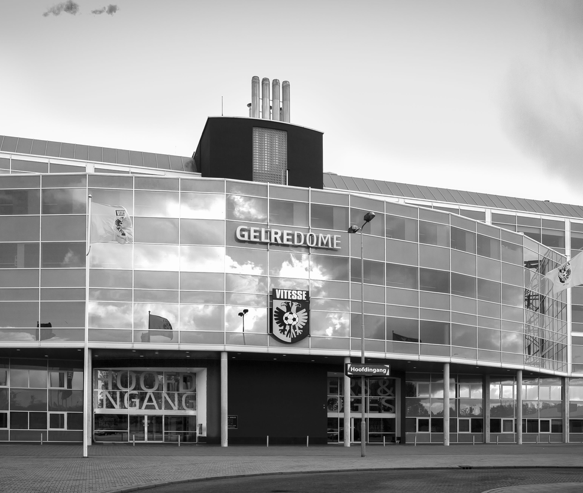
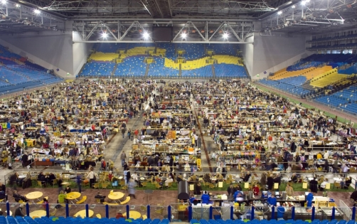

GELREBUSINESS15


Info
Info
Aanvang: 08.00 uur
Jarenlang waren de Bedrijven Kontakt Dagen Arnhem een vertrouwd beeld in de Arnhemse Rijnhal. Deze B2B beurs wordt in een nieuw jasje gestoken en vindt op woensdag 25 en donderdag 26 maart 2015 plaats in GelreDome onder de naam ‘GelreBusiness15’.
Niet alleen de naam en de locatie zijn veranderd, ook de opzet ondergaat een make-over. De beursvloer is namelijk twee keer groter dan in de oude situatie. Daarnaast krijgt de beurs een meer regionaal karakter waardoor niet alleen Arnhem, maar ook de regio’s Nijmegen, Veenendaal, Ede, Apeldoorn, Doetinchem en Zevenaar vertegenwoordigd zullen zijn.
Prijs
Gratis